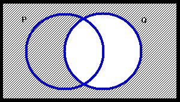
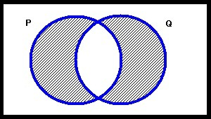
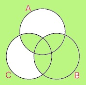
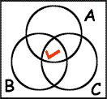
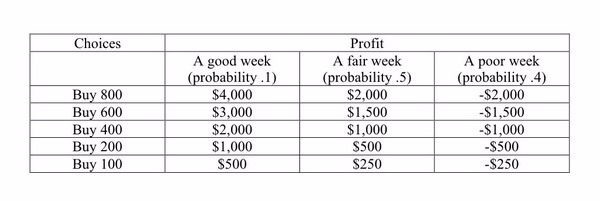

1
Critical thinking entails:
Choose one answer.
| a. Thinking a lot | ||
| b. Eliminating flaws and biases in one's thinking | ||
| c. Suspending one's judgment | ||
| d. A and B | ||
| e. B and C |
Question
2
Critical thinking skills include all of the following except:
Choose one answer.
| a. Understanding the logical connections between ideas | ||
| b. Inventing new concepts and possibilities | ||
| c. Identifying, constructing, and evaluating arguments | ||
| d. Detecting inconsistencies and common mistakes in reasoning | ||
| e. Identify the relevance and importance of ideas |
Question
3
Which of the following is a characteristic of critical thinking?
Choose one answer.
| a. Examining claims for possible biases | ||
| b. Accumulating a large amount of information | ||
| c. Maintaining beliefs from one's upbringing | ||
| d. Basing one's beliefs on the advice of experts | ||
| e. Dismissing evidence |
Question
4
Which of the following is NOT the case?
Choose one answer.
| a. There are definite rules for reasoning correctly | ||
| b. Correct reasoning can be improved by practice | ||
| c. How much you know will always affect your ability to reason correctly | ||
| d. Intellectual laziness can prevent one from reasoning correctly | ||
| e. Reviewing one's mistakes is crucial to improving one's reasoning |
Question
5
Distinguishing between the literal meaning of a statement and its conversational implicature helps us to determine:
Choose one answer.
| a. The meaning of conversational speech | ||
| b. The truth or falsity of the statement | ||
| c. The context in which the statement was uttered | ||
| d. The emotional content of the statement | ||
| e. The scientific value of the statement |
Question
6
How would you classify the following definition? "Abortion is the murder of an innocent person during pregnancy."
Choose one answer.
| a. Reportive definition | ||
| b. Stipulative definition | ||
| c. Precising definition | ||
| d. Persuasive definition | ||
| e. Dictionary definition |
Question
7
How would you evaluate the following definition? "A cat is a four-legged creature that may be domesticated or may live in the wild."
Choose one answer.
| a. Inconsistent | ||
| b. Circular | ||
| c. Too wide | ||
| d. Too narrow | ||
| e. Too obscure |
Question
8
Verbal disputes arise when:
Choose one answer.
| a. The participants disagree about the facts | ||
| b. The participants hold differing opinions | ||
| c. The participants appeal to different authorities | ||
| d. The participants base their positions on emotion | ||
| e. The participants tacitly employ different definitions |
Question
9
For X to be a sufficient condition for Y, it must be the case that
Choose one answer.
| a. It is impossible to have Y without X | ||
| b. It is possible to have Y without X | ||
| c. Y is sometimes present when X is not | ||
| d. X is sometimes present when Y is not | ||
| e. The presence of X guarantees the presence of Y |
Question
10
How would you classify the condition set forth in the following statement? "I will drive to Texas with Paul if and only if he buys me a steak."
Choose one answer.
| a. Paul buying me a steak is a necessary condition for me to drive to Texas with him. | ||
| b. Paul buying me a steak is a sufficient condition for me to drive to Texas with him. | ||
| c. Paul buying me a steak is a necessary and sufficient condition for me to drive to Texas with him. | ||
| d. Paul buying me a steak is neither a necessary nor a sufficient condition for me to drive to Texas with him. | ||
| e. Driving to Texas with Paul is a necessary condition for him buying me a steak. |
Question
11
Which type of necessity is involved in the following statement? "You must be at least 21 to purchase alcohol in the state of Virginia."
Choose one answer.
| a. Logical necessity | ||
| b. Empirical necessity | ||
| c. Causal necessity | ||
| d. Legal Necessity | ||
| e. None of the above |
Question
12
Which type of linguistic "pitfall" applies to the following statement? "The Surgeon General shall visit Great Britain to study their medical welfare system
because it is similar to the one in Canada."
Choose one answer.
| a. Referential ambiguity | ||
| b. Syntactic ambiguity | ||
| c. Vagueness | ||
| d. Incomplete meaning | ||
| e. Empty content |
Question
13
Which of the following is an argument?
Choose one answer.
| a. Bill cannot come to work today because he hurt his back. | ||
| b. I asked you on Monday to finish that report for me today. I asked you for it again on Tuesday. Where is it? | ||
| c. I will pay my taxes. After all, I do not want the government to take my house, and that is what they will do if I do not pay my taxes. | ||
| d. All men are mortal. Socrates is a man. So were about half of the Greeks. | ||
| e. Money only causes problems. When I was young, we were very poor. I was only allowed to eat breakfast on the weekends. |
Question
14
In the following argument, which statements are the premises? "Moons are celestial bodies that orbit around planets. Hence, the Earth cannot be a moon
because it does not orbit around a planet."
Choose one answer.
| a. Moons are celestial bodies that orbit around planets | ||
| b. The Earth cannot be a moon | ||
| c. The Earth does not orbit around a planet | ||
| d. A and B | ||
| e. A and C |
Question
15
Which of the following is true of this set of statements? "All monkeys can dance. Anything that dance can tango. So all monkeys can tango."
Choose one answer.
| a. They comprise an argument | ||
| b. They comprise a valid argument | ||
| c. They comprise a sound argument | ||
| d. A and B | ||
| e. A, B, and C |
Question
16
Which of the following is true of this set of statements? "Some fire engines are red. Some fire engines are loud. Therefore, some fire engines are red and
loud."
Choose one answer.
| a. They comprise an argument | ||
| b. They comprise a valid argument | ||
| c. They comprise a sound argument | ||
| d. A and B | ||
| e. A, B, and C |
Question
17
Which of the following statements is true?
Choose one answer.
| a. All sound arguments are valid | ||
| b. All valid arguments are sound | ||
| c. All unsound arguments are invalid | ||
| d. A and B | ||
| e. A, B, and C |
Question
18
The following is an example of which valid argument form? "If Bibi wants to eat, she makes a snorting noise. But Bibi is not making a snorting noise.
Therefore, Bibi does not want to eat."
Choose one answer.
| a. Modus ponens | ||
| b. Modus tollens | ||
| c. Hypothetical syllogism | ||
| d. Disjunctive syllogism | ||
| e. Reductio ad absurdum |
Question
19
The following is an example of which valid argument form? "Let us assume that a giant meteor has hit the earth. If a giant meteor has hit the earth, there
should be a huge impact crater, the climate should be changing, and the sky should be darkened with debris. None of these things are the case. Therefore, a
giant meteor has not hit the earth."
Choose one answer.
| a. Modus ponens | ||
| b. Modus tollens | ||
| c. Hypothetical syllogism | ||
| d. Disjunctive syllogism | ||
| e. Reductio ad absurdum |
Question
20
Identify the hidden assumption in the following argument. "I have a headache. Therefore, I should take an aspirin."
Choose one answer.
| a. Headaches are uncomfortable | ||
| b. It is better to treat a headache than let it be | ||
| c. We are all out of ibuprofen | ||
| d. If I take an aspirin my headache will subside | ||
| e. Aspirin is cheap at the corner store |
Question
21
Inductive arguments may be:
Choose one answer.
| a. Valid | ||
| b. Sound | ||
| c. Strong | ||
| d. True | ||
| e. False |
Question
22
Which of the following is not a characteristic of all good arguments?
Choose one answer.
| a. They are deductively sound | ||
| b. They have true premises | ||
| c. They are either valid or strong | ||
| d. Their premises are relevant to their conclusion | ||
| e. Their premises do not beg the question |
Question
23
In an argument map, co-premises are represented by:
Choose one answer.
| a. Arrows pointing from one co-premise to the others | ||
| b. Arrows pointing from the co-premises to the conclusion they support | ||
| c. Lines that merge beneath the co-premises and form an arrow pointing to the conclusion they support | ||
| d. Lines that divide beneath the conclusion and point to the premises that support it | ||
| e. Arrows pointing from the conclusion to the co-premises |
Question
24
Which type of argument is the following? "Writing a novel is just like baking a cake. Unless you have all of the ingredients ready from the very beginning,
it will not come out very well."
Choose one answer.
| a. Inductive | ||
| b. Deductive | ||
| c. Sound | ||
| d. Valid | ||
| e. Analogical |
Question
25
Which of the following arguments is not valid?
Choose one answer.
| a. Every whale is a mammal. Moby Dick is a whale. So Moby Dick is a mammal. | ||
| b. Every whale is a mammal. Every mammal is an animal. So every whale is an animal. | ||
| c. Every whale is a mammal. Nemo is not a mammal. So Nemo is not a whale. | ||
| d. If Moby Dick is clever, he will get away. But Moby Dick is not clever. Therefore, he will not get away. | ||
| e. No whale is an insect. Moby Dick is a whale. So Moby Dick is not an insect. |
Question
26
To which category of fallacious reasoning does the following claim belong? "Mr. Yamamoto smoked two packs of cigarettes a day, and he lived to be 85.
Therefore, smoking cigarettes cannot be bad for your health."
Choose one answer.
| a. Fallacy of inconsistency | ||
| b. Fallacy of relevance | ||
| c. Fallacy of insufficient evidence | ||
| d. Fallacy of inappropriate presumption | ||
| e. Fallacy of affirming the consequent |
Question
27
To which type of fallacious reasoning does to the following claim belong? "James comes from a long line of high-achieving men. Therefore, James is destined
for great things."
Choose one answer.
| a. False dilemma | ||
| b. Ad hominem | ||
| c. Red herring | ||
| d. Affirming the consequent | ||
| e. Genetic fallacy |
Question
28
A Non sequitur is a fallacy in which:
Choose one answer.
| a. The conclusion does not follow from the premises | ||
| b. A personal attack is given in place of a reason | ||
| c. A word changes meaning mid-argument | ||
| d. Only a limited set of alternatives are presented | ||
| e. The conclusion is assumed in one of the premises |
Question
29
Which of the following types of cognitive bias apply to the following scenario? "A man believes that he has made a wise investment the stock has invested
in has been declining in value. Logically, he figures, it is due for a rebound."
Choose one answer.
| a. Confirmation bias | ||
| b. Framing bias | ||
| c. Overconfidence effect | ||
| d. Clustering illusion | ||
| e. Gambler's fallacy |
Question
30
Which of the following types of fallacious appeal applies here? "I think you should stop using a cell phone. According to a recent poll, 75% of people
believe they are bad for your health!"
Choose one answer.
| a. Appeal to authority | ||
| b. Appeal to common belief | ||
| c. Appeal to fear | ||
| d. Appeal to vanity | ||
| e. Appeal to wishful thinking |
Question
31
Which of the following is indicative of post-hoc reasoning?
Choose one answer.
| a. Concluding that X caused Y because X was close to Y in space | ||
| b. Concluding that X caused Y because X followed Y in time | ||
| c. Concluding that X caused Y because Y followed X in time | ||
| d. Concluding that X could not have caused Y because X followed Y in time | ||
| e. Concluding that X could not have caused Y because Y followed X in time |
Question
32
Which of the following is most likely to be a case of post-hoc reasoning?
Choose one answer.
| a. Clouds make it rain, since it always starts to rain after clouds have formed. | ||
| b. Finding four-leaf clovers is good luck, since something terrific always happens after you find one. | ||
| c. News about employment is bad for the stock market, since the market always falls on days when bad employment figures are released. | ||
| d. Boiling the water makes it safer to drink, since nobody got sick anymore after we started doing it. | ||
| e. Drinking warm milk helps me relax, since I always fall asleep after drinking some. |
Question
33
Which of the following types of fallacious reasoning apply here? "Employment numbers can't be that good. Don't believe what that lying politician tells
you!"
Choose one answer.
| a. Ad hominem | ||
| b. Red herring | ||
| c. Bandwagon fallacy | ||
| d. Straw man | ||
| e. Moralistic fallacy |
Question
34
Which of the following is indicative of the straw man fallacy?
Choose one answer.
| a. One appeals to a dubious authority in order to support one's claims. | ||
| b. One assumes that since X follows Y in time, that Y bust by the cause of X. | ||
| c. One attributes views to one's opponent that they do not hold. | ||
| d. One is influenced by the issue being framed in a positive or negative manner. | ||
| e. One assumes that the parts have the some properties as the whole. |
Question
35
Which of the following types of fallacious reasoning apply here? "The insurance company estimated that damage at $400, but the body shop estimated it at
$800, so the car must really need around $600 in repairs."
Choose one answer.
| a. False equity | ||
| b. False compromise | ||
| c. Equivocation | ||
| d. False dilemma | ||
| e. Appeal to ignorance |
Question
36
Which of the following types of fallacious reasoning apply here? "If we eliminate the school dress code, students will soon demand that we eliminate other
policies as well, such as the policy against bringing cell phones to class. One compromise will lead to another, and pretty soon the students will be
completely out of control."
Choose one answer.
| a. Equivocation | ||
| b. Suppressed evidence | ||
| c. Straw man | ||
| d. Fallacy of composition | ||
| e. Slippery slope |
Question
37
Which of the following is an example of shifting the burden of proof?
Choose one answer.
| a. "Until the bank can demonstrate that I stole the money, I should be allowed to go free." | ||
| b. "Nobody in the bank saw me steal the money, so I could not have done it." | ||
| c. "Whenever Judge Punishment is trying the case, you know that justice will not be served." | ||
| d. "I am innocent of robbing this bank. Everyone in town knows that I am a trustworthy person." | ||
| e. "I may have robbed the bank, but I only did it because I have to pay my poor child's medical bills." |
Question
38
Which of the following is NOT a false dilemma?
Choose one answer.
| a. "Either you're with me or you're against me." | ||
| b. "There are two kinds of people in this world: dishonest ones and fools." | ||
| c. "You can either divorce him or you can put up with his abuse." | ||
| d. "The mailbox is either empty or it's not." | ||
| e. "Politicians are either corrupt or they fail." |
Question
39
Which of the following is NOT a characteristic of logic?
Choose one answer.
| a. It is topic neutral | ||
| b. Its principles are necessary | ||
| c. Its principles are non-contingent | ||
| d. It models the psychology of reasoning | ||
| e. It is often defined as a formal system |
Question
40
Which of the following is NOT a statement?
Choose one answer.
| a. Two plus two equals three. | ||
| b. The prime minister has his tea everyday after lunch. | ||
| c. Get in the house right now! | ||
| d. It is unlawful to eat watermelons on the steps of the Capitol. | ||
| e. Whenever I see willow trees I get really sad. |
Question
41
Which of the following is the negation of "Tom is very depressed"?
Choose one answer.
| a. "Tom is very happy." | ||
| b. "Tom is not very depressed." | ||
| c. "It is not the case that Tom is very depressed." | ||
| d. "Tom is very impressed." | ||
| e. "Someone other than Tom is very depressed." |
Question
42
Consistency and inconsistency are logical properties that apply to:
Choose one answer.
| a. Simple sentences | ||
| b. Complex sentences | ||
| c. Sets of one or more sentences | ||
| d. Sets of two or more sentences | ||
| e. Sets of three or more sentences |
Question
43
If X entails Y, and Y is false, then:
Choose one answer.
| a. X is true | ||
| b. X is false | ||
| c. It is unknown whether X is true or false | ||
| d. Y entails X | ||
| e. X and Y are inconsistent |
Question
44
If X entails Y, and ~Y entails Z, and Z is true, then:
Choose one answer.
| a. X is true | ||
| b. X is false | ||
| c. Y is false | ||
| d. A and C | ||
| e. E and C |
Question
45
If UIOP and QERT are WFFs in SL, then so is:
Choose one answer.
| a. ~UIOP | ||
| b. UIOP->QERT | ||
| c. (UIOP->QERT) | ||
| d. A and B | ||
| e. A and C |
Question
46
In the sentence P->Q, Q is the:
Choose one answer.
| a. Antecedent | ||
| b. Consequent | ||
| c. Conditional | ||
| d. Connective | ||
| e. Conjunct |
Question
47
Which of the following is the second conjunct of (((P&Q)&R)&S):
Choose one answer.
| a. (P&Q) | ||
| b. ((P&Q)&R) | ||
| c. S | ||
| d. Q | ||
| e. R |
Question
48
In the truth table for the biconditional, (P<->Q) is true when:
Choose one answer.
| a. P is true and Q is true | ||
| b. P is true and Q if false | ||
| c. P is false and Q is true | ||
| d. A and B | ||
| e. B and C |
Question
49
In the truth table for (P->(P^Q)) (where "^" indicates disjunction), the sentence is true when:
Choose one answer.
| a. P is true and Q is true | ||
| b. P is true and Q is false | ||
| c. P is false and Q is true | ||
| d. P is false and Q is false | ||
| e. All of the above |
Question
50
If P means "We invest in renewable energy," Q means "We stop polluting the environment," and R means "We future will look bright," which of the following
sentences captures the statement "Unless we invest in renewable energy, and unless we stop polluting the environment, then the future will not look
bright"? Use "^" for the disjunction.
Choose one answer.
| a. ((P&Q)->~R) | ||
| b. ((P&Q)^~R) | ||
| c. (~(P&Q)->R) | ||
| d. (~(P&Q)->~R) | ||
| e. ~(P&Q)->R |
Question
51
If P is true, Q is true, and R is false, then:
Choose one answer.
| a. ((P->Q)&R) is false | ||
| b. ((P->Q)&R) is true | ||
| c. (P<->(Q<->R)) is true | ||
| d. A and C | ||
| e. B and C |
Question
52
A class may contain:
Choose one answer.
| a. One member | ||
| b. One or more members | ||
| c. An infinite number of members | ||
| d. No members | ||
| e. All of the above |
Question
53
The figure below represents which of the following statements?
Terms of Use: The figure below is licensed under a Creative Commons Attribution-NonCommercial-ShareAlike 3.0 Unported License. It is attributed to Joe Lau and Jonathon Chan. The original figure can be found here.
Terms of Use: The figure below is licensed under a Creative Commons Attribution-NonCommercial-ShareAlike 3.0 Unported License. It is attributed to Joe Lau and Jonathon Chan. The original figure can be found here.

Choose one answer.
| a. Some P are Q | ||
| b. Some Q are P | ||
| c. Nothing is Q | ||
| d. A and C | ||
| e. B and C |
Question
54
In the figure below, the square surrounding the circles represents:
Terms of Use: The figure below is licensed under a Creative Commons Attribution-NonCommercial-ShareAlike 3.0 Unported License. It is attributed to Joe Lau and Jonathon Chan. The original figure can be found here.
Terms of Use: The figure below is licensed under a Creative Commons Attribution-NonCommercial-ShareAlike 3.0 Unported License. It is attributed to Joe Lau and Jonathon Chan. The original figure can be found here.

Choose one answer.
| a. Nothing | ||
| b. Everything | ||
| c. The class of things that are neither P nor Q | ||
| d. A and C | ||
| e. B and C |
Question
55
The figure below represents which of the following statements?
Terms of Use: The figure below is licensed under a Creative Commons Attribution-NonCommercial-ShareAlike 3.0 Unported License. It is attributed to Joe Lau and Jonathon Chan. The original figure can be found here.

Terms of Use: The figure below is licensed under a Creative Commons Attribution-NonCommercial-ShareAlike 3.0 Unported License. It is attributed to Joe Lau and Jonathon Chan. The original figure can be found here.
Choose one answer.
| a. Every P is Q | ||
| b. Every Q is P | ||
| c. Everything is P | ||
| d. Everything is Q | ||
| e. Everything is Q but not P |
Question
56
The figure below represents which of the following statements?
Terms of Use: The figure below is licensed under a Creative Commons Attribution-NonCommercial-ShareAlike 3.0 Unported License. It is attributed to Joe Lau and Jonathon Chan. The original figure can be found here.
Terms of Use: The figure below is licensed under a Creative Commons Attribution-NonCommercial-ShareAlike 3.0 Unported License. It is attributed to Joe Lau and Jonathon Chan. The original figure can be found here.

Choose one answer.
| a. Everything is P or Q | ||
| b. Every P is Q | ||
| c. Everything is P but not Q | ||
| d. Everything is Q but not P | ||
| e. Nothing is Q |
Question
57
The figure below represents which of the following statements?
Terms of Use: The figure below is licensed under a Creative Commons Attribution-NonCommercial-ShareAlike 3.0 Unported License. It is attributed to Joe Lau and Jonathon Chan. The original figure can be found here.

Terms of Use: The figure below is licensed under a Creative Commons Attribution-NonCommercial-ShareAlike 3.0 Unported License. It is attributed to Joe Lau and Jonathon Chan. The original figure can be found here.
Choose one answer.
| a. Everything is P or Q | ||
| b. Nothing is both P and Q | ||
| c. Every P is Q | ||
| d. Every Q is P | ||
| e. Every P is Q and every Q is P |
Question
58
The figure below represents which of the following statements?
Terms of Use: The figure below is licensed under a Creative Commons Attribution-NonCommercial-ShareAlike 3.0 Unported License. It is attributed to Joe Lau and Jonathon Chan. The original figure can be found here.

Terms of Use: The figure below is licensed under a Creative Commons Attribution-NonCommercial-ShareAlike 3.0 Unported License. It is attributed to Joe Lau and Jonathon Chan. The original figure can be found here.
Choose one answer.
| a. Some A are C | ||
| b. Something is A if and only if it is not C | ||
| c. Everything is B | ||
| d. A and C | ||
| e. B and C |
Question
59
The figure below represents which of the following statements?
Terms of Use: The figure below is licensed under a Creative Commons Attribution-NonCommercial-ShareAlike 3.0 Unported License. It is attributed to Joe Lau and Jonathon Chan. The original figure can be found here.

Terms of Use: The figure below is licensed under a Creative Commons Attribution-NonCommercial-ShareAlike 3.0 Unported License. It is attributed to Joe Lau and Jonathon Chan. The original figure can be found here.
Choose one answer.
| a. Something is both A and C | ||
| b. Something is A and B but not C | ||
| c. Something is A but not B or C | ||
| d. A and B | ||
| e. B and C |
Question
60
Which of the following statements is consistent with the figure below?
Terms of Use: The figure below is licensed under a Creative Commons Attribution-NonCommercial-ShareAlike 3.0 Unported License. It is attributed to Joe Lau and Jonathon Chan. The original figure can be found here.
Terms of Use: The figure below is licensed under a Creative Commons Attribution-NonCommercial-ShareAlike 3.0 Unported License. It is attributed to Joe Lau and Jonathon Chan. The original figure can be found here.
Choose one answer.
| a. Something is A, B, and C | ||
| b. Everything is A | ||
| c. Something is A but not B | ||
| d. A and B | ||
| e. A, B, and C |
Question
61
Use a Venn diagram to determine whether the following argument is valid or invalid: "Every B is A. Every B is C. Therefore, Every C is B."
Choose one answer.
| a. Valid | ||
| b. Invalid |
Question
62
Use a Venn diagram to determine whether the following argument is valid or invalid: "Every C is B. No A is C. Therefore, No A is C."
Choose one answer.
| a. Valid | ||
| b. Invalid |
Question
63
Which of the following is a limitation of Venn diagrams?
Choose one answer.
| a. Diagrams with more than three circles are difficult to work with | ||
| b. They have limited expressive power | ||
| c. They are subject to multiple interpretations | ||
| d. A and B | ||
| e. A, B and C |
Question
64
According to the hypothetical deductive method:
Choose one answer.
| a. A confirmed hypothesis increases the probability that a theory is true | ||
| b. A confirmed hypothesis establishes that a theory is true | ||
| c. A confirmed hypothesis indicates that alternative hypotheses need not be taken into account | ||
| d. A disconfirmed hypothesis indicates that a theory is false | ||
| e. A disconfirmed hypothesis decreases the probability that a theory is false |
Question
65
Which of the following is not one of the steps in the hypothetical deductive method?
Choose one answer.
| a. Evaluate the logical consistency of the hypothesis and the predictions | ||
| b. Use experiments to check whether predictions are correct | ||
| c. If the predictions are correct, then the hypothesis is confirmed. If not, then the hypothesis is disconfirmed | ||
| d. Identify the hypothesis to be tested | ||
| e. Generate prediction from the hypothesis |
Question
66
One of the major aims of the hypothetical deductive method is to:
Choose one answer.
| a. Establish the truth or falsity of scientific theories | ||
| b. Confirm or disconfirm hypothesis on the basis of the predictions they generate | ||
| c. Minimize the influence of the scientist's bias on the outcome of an experiment | ||
| d. A and B | ||
| e. B and C |
Question
67
An inductive argument in science is:
Choose one answer.
| a. An inference from an infinite sample to a specific conclusion | ||
| b. An inference from a finite sample to a specific conclusion | ||
| c. An inference from an infinite sample to a general conclusion | ||
| d. An inference from a finite sample to a general conclusion | ||
| e. An inference from a singular piece of data to a general conclusion |
Question
68
Which of the following should not be taken into consideration when choosing between two competing scientific theories?
Choose one answer.
| a. Which theory more precisely identifies the causal mechanism behind the phenomena in question | ||
| b. Which theory is accepted by the most prominent scientists | ||
| c. Which theory explains a greater number of phenomena | ||
| d. Which theory involves the least number of assumptions | ||
| e. Which theory coheres best with the existing body of scientific theories |
Question
69
Suppose there is a celebration at which wine, beer, and cocktails were all served, and everyone who attended later took ill. Everyone had had two or more
different types of drink, and the only type of drink that everyone had was beer. From this evidence, you conclude that it was the beer that caused their
illness. This inference is an application of Mill's method of:
Choose one answer.
| a. Difference | ||
| b. Concomitant variation | ||
| c. Agreement | ||
| d. Residues | ||
| e. The joint method |
Question
70
Suppose you notice that children with large noses tend to more intelligent than children with smaller noses. A method that would help you decide whether
large noses are the cause of greater intelligence is to"
Choose one answer.
| a. Consider cases in which great intelligence occurs in the absence of large noses | ||
| b. Consider cases in which large noses occur in the absence of great intelligence | ||
| c. Consider whether there is another factor that is the cause of both having a large nose and greater intelligence | ||
| d. A and B | ||
| e. A, B and C |
Question
71
Suppose that we observe that beverages containing saccharine form part of the diet of all obese children, and that lower rates of obesity are observed in
children who do not consume saccharine. From this we can infer that:
Choose one answer.
| a. Saccharine causes obesity in children | ||
| b. Sacharine contributes to obesity in children | ||
| c. Obese children are more likely to crave saccharine | ||
| d. Saccharine consumption correlates with childhood obesity | ||
| e. Childhood obesity is a contributing cause of saccharine consumption |
Question
72
The major benefit of using Ishikawa diagrams to may causal relations is that they:
Choose one answer.
| a. Provide a convenient means of representing causal loops | ||
| b. Help to differentiate causation from mere correlation | ||
| c. Help to differentiate between major and minor causes | ||
| d. Provide statistical information about causal links | ||
| e. Provide a convenient top-to-bottom visual representation of causes |
Question
73
Suppose that, following the resignation of a prominent public servant, the news media identifies the recent scandals surrounding the public servant's
married life as the cause of their resignation. The fallacy most likely at work in the media's reasoning is the:
Choose one answer.
| a. Fallacy of reversing causal directoin | ||
| b. Fallacy of mistaking correlation with causation | ||
| c. Fallacy of confusing good causal consequences with reasons for belief | ||
| d. Genetic fallacy | ||
| e. Fallacy of the single cause |
Question
74
Identify the weakness in the following causal argument: "Normally, Joseph washes his hands before every meal. Today, however, Joseph forgot to wash his
hands and he subsequently got the flu. Therefore, Joseph got the flu because he failed to wash his hands."
Choose one answer.
| a. It posits a correlation based on insufficient evidence | ||
| b. It assumes that not washing his hands is the only significant difference between the day he got the flu and every other day | ||
| c. It fails to take into account that he may have failed to wash his hands because he had the flu, and not the other way around. | ||
| d. A and B | ||
| e. B and C |
Question
75
An instance of an inductive argument that is not a scientific inductive argument would be:
Choose one answer.
| a. Reasoning from specific cases to a general conclusion | ||
| b. Reasoning from general principles to a specific prediction | ||
| c. Reasoning from past regularities to predictions about the future events | ||
| d. A and B | ||
| e. B and C |
Question
76
Suppose that A is correlated with B. We can then infer that A causes B if and only if:
Choose one answer.
| a. A comes before B in time | ||
| b. B comes before A in time | ||
| c. A and B occur simultaneously | ||
| d. A never occurs in the absence of B | ||
| e. B never occurs in the absence of A |
Question
77
Which type of question is the following: "Is it justifiable to engage in warfare for the sake of maintaining a tough international image?"
Choose one answer.
| a. Empirical | ||
| b. Conceptual | ||
| c. Evaluative | ||
| d. Critical | ||
| e. Hypothetical |
Question
78
In order to answer conceptual questions, we must make recourse to:
Choose one answer.
| a. The distinction between intrinsic and instrumental values | ||
| b. Observations and experiments | ||
| c. Logic and the meaning of words | ||
| d. Statistical evidence | ||
| e. The help of experts in the relevant field |
Question
79
Which of the following is not one of Polya's four principles of problem solving?
Choose one answer.
| a. Take stock of all available evidence | ||
| b. Understand the nature of the problem | ||
| c. Monitor the outcome of the plan | ||
| d. Draw up a plan to solve the problem | ||
| e. Try out the plan |
Question
80
A complex input-output problem may be analyzed by means of:
Choose one answer.
| a. The hypothetical deductive method | ||
| b. The method of decomposition | ||
| c. The method of agreement | ||
| d. Venn diagrams | ||
| e. The method of difference |
Question
81
In standard flowchart notation, information entering or leaving the system is represented by:
Choose one answer.
| a. A square | ||
| b. An oval | ||
| c. A diamond | ||
| d. a parallelogram | ||
| e. An arrow |
Question
82
Suppose you are planning future investments for you company and you are trying to decide between investing in a risky product, which might yield great
returns, or a less risky product, which would yield more modest, but more reliable returns. Which visual method would best assist you in making your
decision a fiscally responsible one?
Choose one answer.
| a. Flowchart | ||
| b. Decision Tree | ||
| c. Decision Table | ||
| d. A and B | ||
| e. B and C |
Question
83
Which of the following decision table rules would be followed by someone who wanted to make a conservative decision?
Choose one answer.
| a. Maximin | ||
| b. Maximax | ||
| c. Minimax regret | ||
| d. Opportunity loss | ||
| e. Principle of expected value |
Question
84
What information does calculating the expected value of a decision under risk provide you with?
Choose one answer.
| a. The value of a given option in the best possible scenario | ||
| b. The value of a given option in the worst possible scenario | ||
| c. The average value of a given option over the long run | ||
| d. The best outcome of taking the most conservative option | ||
| e. The worst outcome of taking the most risky option |
Question
85
The two components of cognitive creativity are:
Choose one answer.
| a. The creation of new ideas and the modification of old ideas | ||
| b. The creation of new ideas the the creation of new connections between ideas | ||
| c. The creation of new ideas and the evaluation and modification of new ideas | ||
| d. The creation of artwork and expressing one's ideas and emotions through art | ||
| e. The creation of artwork and the modification of old ideas |
Question
86
Due to the popularity of Darwinism, many nineteenth century history books began to put the word "evolution" in their titles: "The Evolution of Civil
Society," The Evolution of Architecture," and so on. Which type of creativity can be discerned in this literary trend?
Choose one answer.
| a. Analogy | ||
| b. Search | ||
| c. Perspective shift | ||
| d. Feature list | ||
| e. Making new connections |
Question
87
Suppose you are trying to decide how many balls of dough to order for a week's business in your pizza shop. You can order dough balls in packages of 100,
200, 400 and 800. Refer to the decision table below to determine which choice has the most favorable expected value.

Choose one answer.
| a. Buying 100 dough balls | ||
| b. Buying 200 dough balls | ||
| c. Buying 400 dough balls | ||
| d. Buying 600 dough balls | ||
| e. Buying 800 dough balls |
Question
88
Suppose you are trying to decide how many balls of dough to order for a week's business in your pizza shop. You can order dough balls in packages of 100,
200, 400 and 800. Refer to the decision table below to determine which choice should be selected using the maximin rule.
Choose one answer.
| a. Buying 100 dough balls | ||
| b. Buying 200 dough balls | ||
| c. Buying 400 dough balls | ||
| d. Buying 600 dough balls | ||
| e. Buying 800 dough balls |
Question
89
Which of the following types of fallacious reasoning apply here? "It is ok to eat meat because other animals eat one another all the time."
Choose one answer.
| a. Moralistic fallacy | ||
| b. Naturalistic fallacy | ||
| c. Bandwagon fallacy | ||
| d. Fallacist's fallacy | ||
| e. Irrelevant appeal |
Question
90
We typically think of money as having:
Choose one answer.
| a. Intrinsic value | ||
| b. Instrumental value | ||
| c. Extrinsic value | ||
| d. A and B | ||
| e. B and C |
Question
91
Something is said to have intrinsic value if and only if:
Choose one answer.
| a. It is valued as a means to some end | ||
| b. It is valued as an end in itself | ||
| c. It is valued as a basic condition for human life | ||
| d. A and B | ||
| e. B and C |
Question
92
In the Euthyphro problem:
Choose one answer.
| a. X is right because God says X is right | ||
| b. God says X is right because X is right | ||
| c. X is right for reasons independent of what God says | ||
| d. A and B | ||
| e. B and C |
Question
93
How would a critic of the divine command theory of morality who is inspired by the Euthyphro argument reply to the assertion that, "if God says that murder
is impermissible, then murder must be permissible"?
Choose one answer.
| a. Murder must be impermissible because morality depends on God | ||
| b. If we believe that murder is impermissible, it is because we have interpreted God's will incorrectly | ||
| c. We cannot accept that murder is impermissible just because God says it is, since God himself may have independent grounds for believing that murder is impermissible | ||
| d. The impermissibility of murder cannot depend on God because different religions worship different gods | ||
| e. The impermissibility of murder cannot depend of God because it depends on whether the act was performed in self-defense |
Question
94
Suppose that someone believes that it is impermissible to lie unless lying would prevent some horrible consequences from coming about. This person would be
described as a:
Choose one answer.
| a. Moral absolutist | ||
| b. Moral contextualist | ||
| c. Moral relativist | ||
| d. Moral objectivist | ||
| e. Moral subjectivist |
Question
95
According to moral relativism:
Choose one answer.
| a. Each society possesses its own objective normative facts | ||
| b. What is right or wrong depends on the moral framework of the society in question | ||
| c. There are no objective normative facts | ||
| d. A and B | ||
| e. B and C |
Question
96
Suppose we are considering a murder case that has appeared in the media and we decide that killing innocent people is wrong. Which of the following is true
of our line of reasoning?
Choose one answer.
| a. We have generated a moral principle by generalizing from a moral intuition | ||
| b. We have formulated a prediction about a concrete case based on a moral principle | ||
| c. We have tested a prediction against a moral intuition | ||
| d. We have adjusted a moral intuition to conform with a moral principle | ||
| e. We have adjusted a moral principle to conform with a moral intuition |
Question
97
Supposed we believe that killing innocent people is wrong, but then someone asks us what we think about abortion and we decide that abortion means killing
an innocent person, but that in this case it is permissible. We conclude that it is wrong to kill innocent people except in certain dire cases. Which of
the following is true of our line of reasoning?
Choose one answer.
| a. We have generated a moral principle by generalizing from a moral intuition | ||
| b. We have formulated a prediction about a concrete case based on a moral principle | ||
| c. We have tested a prediction against a moral intuition | ||
| d. We have adjusted a moral intuition to conform with a moral principle | ||
| e. We have adjusted a moral principle to conform with a moral intuition |
Question
98
In the following argument, which sentence is the analogy-stating premise? "There is nothing wrong with an animal altering its habitat. In fact, there are
no animals that do not alter their habitat in some way. Human beings are no different. Therefore, the human impact on the environment is natural and does
not need to be scrutinized. Global warming is just our way of making ourselves at home."
Choose one answer.
| a. There is nothing wrong with an animal altering its habitat. | ||
| b. In fact, there are no animals that do not alter their habitat in some way. | ||
| c. Human beings are no different. | ||
| d. Therefore, the human impact on the environment is natural and does not need to be scrutinized. | ||
| e. Global warming is just our way of making ourselves at home. |
Question
99
In the following argument, which sentence provides support for the evaluative premise? "There is nothing wrong with an animal altering its habitat. In
fact, there are no animals that do not alter their habitat in some way. Human beings are no different. Therefore, the human impact on the environment is
natural and does not need to be scrutinized. Global warming is just our way of making ourselves at home."
Choose one answer.
| a. There is nothing wrong with an animal altering its habitat. | ||
| b. In fact, there are no animals that do not alter their habitat in some way. | ||
| c. Human beings are no different. | ||
| d. Therefore, the human impact on the environment is natural and does not need to be scrutinized. | ||
| e. Global warming is just our way of making ourselves at home. |
Question
100
Suppose I have paid a plumber $100 to fix my sink. Which of the following is now true?
Choose one answer.
| a. I have a claim-right against the plumber with regard to his fixing my sink. | ||
| b. The plumber has the privilege not to fix my sink. | ||
| c. I have a duty to see that the sink gets fixed. | ||
| d. I have a power over the plumber with respect to his fixing my sink. | ||
| e. The plumber has an immunity against me with respect to my not paying him. |